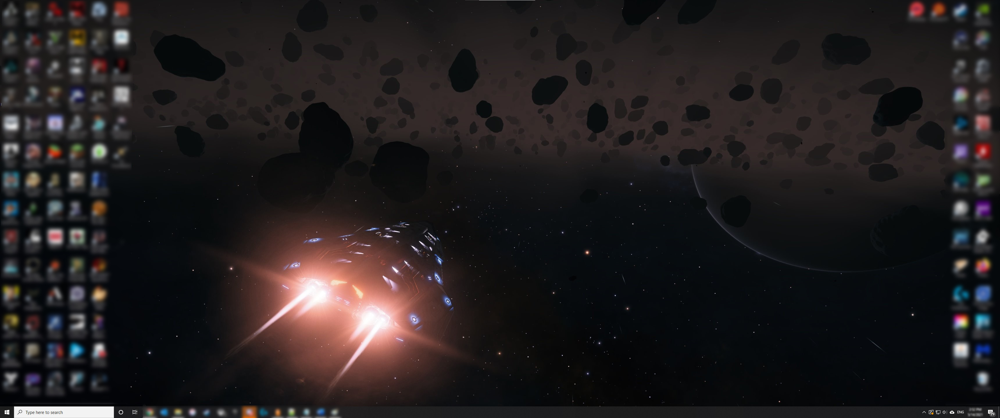

Terms - Unit 1 Portfolio Project
Terms
-
Application Software - "Programs that enable users to perform specific tasks on a computer, such as writing letters or playing games; also called apps." -pg 15
-
Boot - "To start up a computer." -pg 14
-
Computer - "A programmable, electronic device that accepts data input, performs processing operations on that data, and outputs and stores the results." -pg 8
-
Data - "Raw, unorganized facts." -pg 9
-
Desktop Computer - "A type of computer designed to fit on or next to a desk." -pg 19
-
Hardware - "The physical parts of a computer system, such as the keyboard, monitor, printer, and so forth." -pg 12
-
Information - "Data that has been processed into a meaningful form." -pg 9
-
Input - "The process of entering data into a computer; can also refer to the data itself." -pg 8
-
Media Tablet - "A mobile device, usually larger than a smartphone, that is typically used to access the Internet and display multimedia content." -pg 18
-
Notebook Computer - "A fully function portable computer that opens to reveal a screen and keyboard; also called a laptop computer." -pg 21
-
Hybrid Notebook-Tablet Computer - "A portable computer designed to function as both a notebook and a tablet PC." -pg 21

The Best 2-in-1 Convertible and Hybrid Laptops for 2021 -pcmag.com
-
Operating System - "The main component of system software that enables a computer to operate, manage its activities and the resources under its control, run application programs, and interface with the user." -pg 14
-
Output - "The process of presenting the results of processing; can also refer to the results themselves." -pg 9
-
Personal Computer (PC) - "A type of computer based on a microprocessor and designed to be used by one person at a time; also called a microcomputer." -pg 19
-
Portable Computer - "A small personal computer, such as a notebook or tablet, that is designed to be carried around easily." -pg 21
-
Processing - "Performing operations on data that has been input into a computer to convert that input to output." -pg 8
-
Smartphone - "A mobile device based on a mobile phone that includes Internet capabilities and can run apps." -pg 18
-
Software - "The instructions, also called computer programs, that are used to tell a computer what it should do." -pg 14
-
Storage - "The operation of saving data, programs, or output for future use." -pg 9
-
Windows Desktop - "The background work area displayed on the screen for computers running Microsoft Windows." -pg 14
